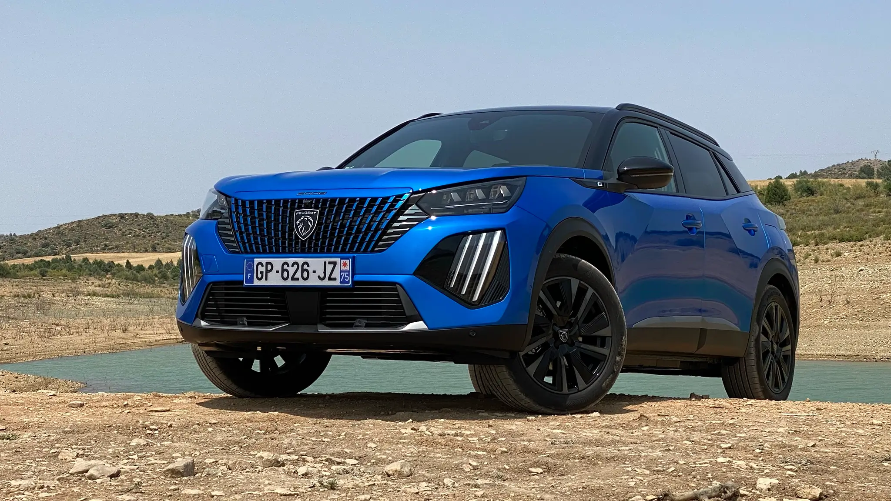

Elétricos chegam ao Top 10 dos carros mais vendidos em Portugal em 2023
As surpresas entre os 10 carros mais vendidos em Portugal em 2023 não se encontram no pódio, mas a meio da tabela. E são eletrizantes.

Depois de sabermos quais foram as marcas mais vendidas, hoje ficamos a saber quais foram os 10 carros mais vendidos em Portugal em 2023.
Antes disso, importa recordar que 2023 foi um ano de recuperação do mercado nacional, ainda devido à pandemia e a todas as crises que a ela se seguiram. O mercado cresceu 26,1% face a 2022 e ultrapassou as 236 mil unidades, quando contabilizamos os ligeiros e pesados.
O pódio das marcas mais vendidas de 2023 foi exatamente o mesmo de 2022, encimado pela Peugeot e seguida pela Renault e Mercedes-Benz. Curiosamente, na lista dos carros mais vendidos em Portugal em 2023, podemos constatar o mesmo: o pódio deste ano é idêntico ao do ano passado.